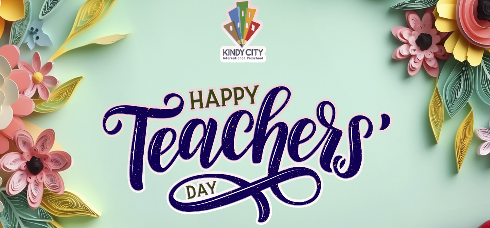
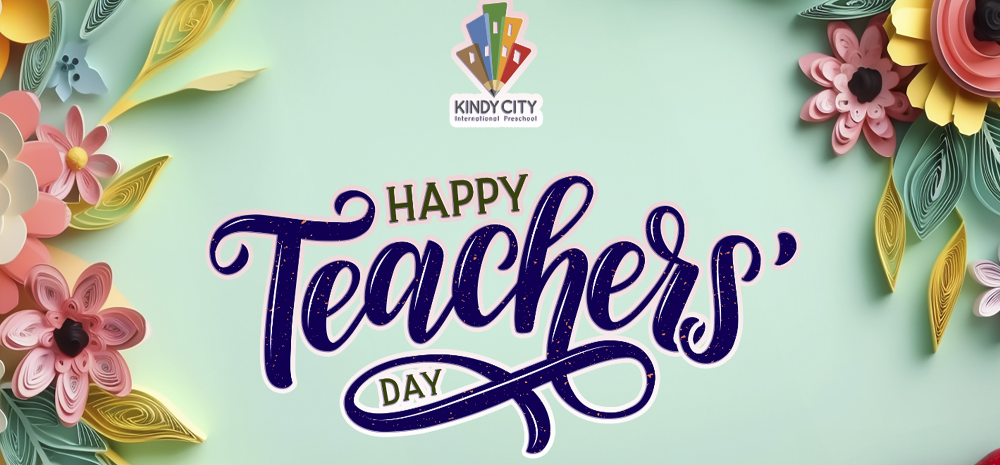

Thông báo
Hình thành, phát triển nhân cách cho trẻ em ở giai đoạn tuổi mầm non.
Hình thành nhân cách cho trẻ là nhiệm vụ rất quan trọng trong các cơ sở giáo dục mầm non và các bậc cha mẹ trẻ. Khoa học tâm lý đã khẳng định rằng khi hết tuổi mầm non, ở đứa trẻ đặt xong nền móng đầu tiên của nhân cách, sự phát triển về mặt đạo đức cho trẻ sau này đều mang rõ dấu ấn của thời ấu thơ.
Mỗi một đứa trẻ ngay từ khi ra đời đã là một cá thể độc lập, có cá tính và những mong muốn độc lập của riêng mình. Bất kể là cô giáo hay bố mẹ đều không có đặc quyền chi phối và hạn chế hành vi của chúng. Vì vậy việc áp dụng các biện pháp giáo dục phù hợp với mục tiêu giảng dạy đòi hỏi phải có sự linh hoạt và mềm dẻo phù hợp với khả năng cũng như hứng thú của trẻ.
Thực tế trẻ mầm non đã biết chia sẻ nhưng không phải lúc nào chúng cũng thể hiện sự cảm thông và nhường nhịn. Hiện tượng các bé tranh giành đồ chơi, đánh bạn vẫn thường xuyên xảy ra và rất nhiều bậc phụ huynh phải than phiền vì bé nhà mình hư quá, ích kỉ quá lúc nào cũng bắt mọi người phải làm theo ý mình.
Vậy làm thế nào để có thể định hướng và giáo dục các bé biết yêu thương, đoàn kết, quan tâm, chia sẻ với bạn bè và người thân? Một số giải pháp mà các cô giáo Trường mầm non Trần Nguyên Hãn đã thực hiện để giúp trẻ có cơ hội được thể hiện sự quan tâm, chia sẻ tới cô giáo, bạn bè và mọi người xung quanh. Cụ thể như sau:
1. Tạo môi trường lớp học thân thiện cởi mở để thu hút trẻ:
Môi trường thân thiện và thẩm mĩ sẽ gây hứng thú cho trẻ và bản thân giáo viên. Từ đó góp phần hình thành và nâng cao mối quan hệ thân thiện, tự tin giữa giáo viên với trẻ và giữa trẻ với trẻ. Vì vậy, các cô đã trao đổi và cùng thống nhất kế hoạch, biện pháp trang trí sắp xếp tạo môi trường, các góc hoạt động trong lớp phù hợp với diện tích lớp cũng như các đồ dùng đồ chơi trong lớp phù hợp với tâm sinh lý trẻ, có tính thẩm mỹ và tích cực đối với trẻ.
Bên cạnh đó, xây dựng quy ước với trẻ về quy định trong lớp học và giao tiếp giữa trẻ với trẻ trong lớp. Việc rèn nề nếp được thực hiện ngay khi đón trẻ vào năm học mới.
Với quan điểm lấy trẻ làm trung tâm, các cô giáo đã tận dụng tối đa các sản phẩm của trẻ để trang trí lớp. Trẻ được vẽ, xé, nặn các sản phẩm để trang trí các góc. Trong các buổi chơi trẻ được hoạt động với chính sản phẩm của mình đã làm nên trẻ rất thích thú. Những hoạt động giao tiếp qua vai chơi: người mua - người bán đã dạy trẻ biết thể hiện thái độ ân cần, niềm nở với khách hàng. Thông qua đó tạo được mối quan hệ thân thiện giữa trẻ với trẻ khi chơi.
Trẻ ít có dịp tiếp xúc, tìm hiểu, khám phá thiên nhiên. Chính vì vậy, các cô giáo đã tạo cho các bé một góc thiên nhiên xanh với rất nhiều nguyên vật liệu mở giúp các bé được thực hành kĩ năng gieo hạt chăm sóc cây, qua đó giáo dục cho các bé tình yêu thiên nhiên, biết quan tâm bảo vệ môi trường. Và đặc biệt, qua hoạt động này các bé học được kỹ năng chia sẻ với bạn bè, biết trân trọng thành quả lao động của mình và của bạn.
Không chỉ tạo môi trường thân thiện cho trẻ hoạt động, giao tiếp, các cô giáo còn thống nhất mang đến cho trẻ một không khí lớp học thật ấm áp tràn ngập yêu thương. Cô giáo cũng giống như một người bạn lớn để trẻ có thể an tâm chia sẻ những thắc mắc, băn khoăn cũng như những “bức xúc” rất trẻ con của mình.
Các nhà giáo dục cho rằng "trẻ học nhanh nhất từ bắt chước". Thế nên nếu muốn dạy bé thành người biết quan tâm chia sẻ thì cô giáo và bố mẹ phải là tấm gương để các bé noi theo và học tập. Chính vì vậy, trước mặt trẻ các cô giáo luôn thể hiện sự quan tâm, chia sẻ cũng như thể hiện tình cảm theo hướng tích cực với chị em đồng nghiệp, với phụ huynh.
2. Dạy trẻ biết quan tâm chia sẻ thông qua trò chơi tập thể.
Với trẻ mầm non, khả năng giao tiếp tốt trong tập thể giúp trẻ thích nghi dễ dàng, nhanh chóng với môi trường mới: thầy cô - bạn bè mới và những đòi hỏi mới của hoạt động học tập. Ý thức và tinh thần tập thể sẽ giúp trẻ tránh được những xung đột không đáng có giữa trẻ với nhau, giữa trẻ với cô, làm nảy sinh ở trẻ lòng vị tha, sự quan tâm đến người khác và trên cơ sở đó phát triển những mối quan hệ thân thiện, gần gũi, cảm thông giữa trẻ với những người xung quanh. Tất cả những điều này tác động một cách tích cực lên trẻ, làm cho trẻ cảm thấy hứng thú muốn đến trường, muốn giao tiếp với cô, bạn bè và muốn học.
3. Tổ chức các hoạt động ngoại khoá, các ngày hội, ngày lễ.
Có thể nói các hoạt động ngoại khóa, đặc biệt là việc tổ chức hiệu quả các ngày hội, ngày lễ cho trẻ là một hình thức giáo dục hiệu quả và sinh động nhất, giúp trẻ được trải nghiệm các cảm xúc tích cực. Thông qua đó trẻ được học và chia sẻ các kĩ năng sống với cô giáo, bạn bè và cha mẹ .
Với quan điểm như vậy nên cô giáo và ban phụ huynh lớp đã thống nhất từ đầu năm học các kế hoạch hoạt động ngoại khóa cho các con. Các cô giáo đặc biệt chú ý đến các ngày lễ hội: Ngày 20/10, ngày Tết Trung Thu, Noel, Tết Nguyên Đán, ngày 8/3, sinh nhật của trẻ.. Với mỗi ngày lễ - hội, các cô giáo cố gắng sử dụng một hình thức tổ chức riêng nhằm lôi cuốn hấp dẫn trẻ tích cực tham gia hoạt động.
4. Làm tốt công tác phối hợp với phụ huynh
Có không ít phụ huynh khi gửi con đến trường mầm non là yên tâm giao trọng trách giáo dục trẻ cho nhà trường mà quên rằng vai trò của cha mẹ là vô cùng quan trọng trong việc phối hợp với nhà trường giáo dục con bởi “cha mẹ là những người thầy đầu tiên của bé”. Ngay cả khi giao bé cho những cô giáo mầm non thì vai trò của cha mẹ cũng không hề mờ nhạt đi. Cha mẹ cần đi cùng với con suốt quãng đường đời mà những năm tháng tuổi thơ sẽ tạo một nền tảng chắc chắn cho bé khi trưởng thành.
Nắm được phương pháp giáo dục của nhà trường, phụ huynh sẽ hiểu rõ những hoạt động của trẻ ở lớp và có thể tham gia đánh giá sự phát triển của trẻ. Mặt khác, phụ huynh cũng đánh giá được cách giáo dục của mình có phù hợp với nhà trường không. Gia đình và nhà trường cần là người bạn đồng hành cùng chí hướng thì việc chăm sóc giáo dục trẻ mới hiệu quả. Và quan trọng hơn là phụ huynh có điều kiện tiếp xúc với môi trường học tập sinh hoạt của trẻ, có điều kiện gần gũi với các cô giáo. Từ đó tạo sợi dây liên kết giữa gia đình và nhà trường, giúp trẻ được sống trong một môi trường giáo dục tốt, qua đó còn dạy cho trẻ bài học cần phải có mối quan hệ tích cực với những người xung quanh.
Xác định được tầm quan trọng của mối quan hệ giữa phụ huynh và nhà trường ngay từ đầu năm học khi mới đón trẻ vào lớp các cô giáo luôn tiếp xúc phụ huynh với một thái độ tích cực thân thiện và chia sẻ, trao đổi cụ thể với phụ huynh về chế độ sinh hoạt của trẻ ở trường, nắm bắt kịp thời những thông tin về đặc điểm tâm lý tính cách của cá nhân trẻ, mời phụ huynh vào lớp làm quen với một số sinh hoạt của các con, chơi với con và có thể cho con mang đồ chơi yêu thích đến lớp tránh sự hụt hẫng ban đầu.
Bên cạnh đó các cô giáo cũng liên lạc thường xuyên với gia đình trẻ (qua trao đổi trực tiếp, nhóm Zalo, bảng thông báo, điện thoại..) để tìm hiểu sinh hoạt của trẻ ở gia đình, thông tin cho cha mẹ biết tình hình của trẻ ở lớp, những thay đổi của trẻ để kịp thời có biện pháp giáo dục phù hợp. Và trong buổi họp đầu năm các cô giáo đã tạo cho phụ huynh một bất ngờ thú vị. Đó là buổi chia sẻ kinh nghiệm nuôi dạy trẻ thật sự, phụ huynh được tiếp đón trong một không gian thân mật, ấm cúng và trang trọng. Phụ huynh là những người đầu tiên chia sẻ những mong muốn nguyện vọng của mình khi gửi con ở trường mầm non, còn các cô giáo chia sẻ những kinh nghiệm chăm sóc giáo dục trẻ, giải đáp những băn khoăn thắc mắc của phụ huynh và đưa ra mục tiêu “dạy trẻ biết quan tâm chia sẻ”. Phụ huynh rất nhiệt tình ủng hộ và có nhiều đóng góp quý báu. Sau thành công của buổi họp, có thể thấy sự thay đổi rõ rệt từ phía các bậc phụ huynh đó chính là sự quan tâm chia sẻ thật sự với lớp, với giáo viên. Tất cả các bậc phụ huynh thường xuyên quan tâm đến các hoạt động của lớp, ủng hộ rất nhiều nguyên vật liệu, những giáo cụ trực quan. Chỉ cần giáo viên thông báo hoặc quan sát thấy các cô và các con bận rộn với việc chuẩn bị cho lễ hội là nhiệt tình giúp đỡ. Còn rất nhiều, rất nhiều các hoạt động khác nữa, trong mỗi bước trưởng thành của các con, trong mỗi thành công của lớp đều chứa đựng tình yêu thương, sự quan tâm chia sẻ của tất cả các bậc phụ huynh.
Để phụ huynh có thể phối hợp tốt trong việc giáo dục trẻ các cô giáo đã sưu tầm rất nhiều tư liệu quí về dạy trẻ biết quan tâm chia sẻ để phụ huynh tham khảo. Cơ thể trẻ còn non yếu và cũng rất hiếu động nên các bé thường hay ốm và có thể bị ngã dẫn đến tổn thương cơ thể. Với mỗi trường hợp trẻ bị ốm, bị chấn thương dài ngày phải đi viện các cô giáo đều cùng với ban phụ huynh lớp đến tận nhà hỏi thăm động viên tinh thần cha mẹ và các bé. Những việc làm này tuy nhỏ nhưng cũng để lại trong lòng các phụ huynh những tình cảm tốt đẹp, góp phần thắt chặt sợi dây tình cảm giữa phụ huynh và nhà trường. Việc dạy bé biết quan tâm chia sẻ với người thân và bạn bè giống như ta chắt lọc nguồn nước tinh khiết từ mạch nguồn yêu thương tưới cho những chồi non mới nhú. Việc làm này đòi hỏi giáo viên phải tận tâm tận lực: Không ngừng học hỏi, tích luỹ kinh nghiệm, rèn luyện bản thân trở thành tấm gương cho trẻ noi theo học tập. Đây là một trong những việc làm cần thiết giúp trẻ được phát triển một cách toàn diện.